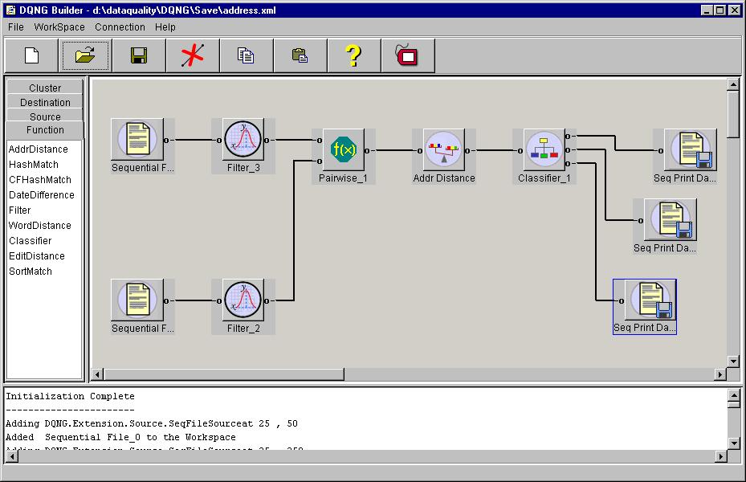

Creating a Flow Diagram
The flow diagram as shown in the image below, consists of several functional
blocks connected with each other. The tool can be used to interactively
build a flow diagram to get data from an input file or database, analyze
it by applying preprocessing and matching functions on the data, and display/save
the results obtained. The functional blocks are parameterized, and they
can be tuned until desired results are obtained in each stage.

Creating a Flow Diagram
-
Drag and drop the item from the palette (list at left top of tool) to the
workspace (canvas at right top of tool).
-
Right click on the functional block to get a popup menu.
-
Select properties from the menu and fill in the parameters for that block.
-
Drag and drop the next item from the palette onto the workspace.
To connect one block to another, drag the output tab of the first block,
and drop it onto the input tab of the other block. One output can be connected
with only one other input and vice versa.
Changing the Flow Diagram
The flow diagram can be changed in the following ways.
-
A block can be moved by dragging on its label and dropping it onto the
desired location in the workspace.
-
A block can be deleted by selecting Delete from its poup
menu. The connections in its input and ouput are also removed.
-
A selected connection can be removed by Cut Connection button
in the tool bar. A connection can be selected by clicking on its either
end. The selected connection is blue in color.
Clearing the Workspace
The workspace can be cleared by using the Clear menu item
from the Workspace menu.
Operations on a Functional Block
The popup menu for each block consists of the following:
-
Properties: Pops up another window in which its properties
can be set.
-
Run: Executes the functionality in that block. In some of
the blocks the execution is done as part of the View Data
before the results are displayed.
-
Delete: Deletes that block, and its connections.
-
Copy: Yet to be implemented.
-
View Data: Opens up another window where the data at that
stage is displayed. Usually used after the properties for that block is
set.
-
Help: Opens up help in a browser.